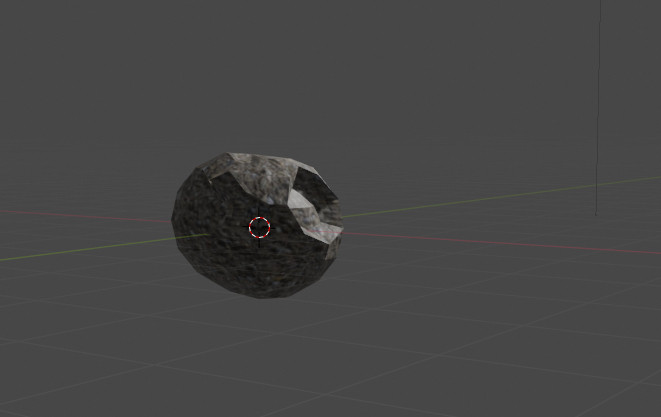

Every game neeeds assets... I can not do it all alone
Nearing the finish line Cupig's Key Collectathon still needed some assets. Like this meteor I made in Blender.

This is the easier thing. These things will be seen from afar, that is good enough.
What I still needed is music. So I bought Kenny Game Sssets All-in-1 pack. Everything there is CCO, but it has so much content for such a small price I make sure to credit Kenny in my game. And I sure will use more than some music from that pack in other porjects too.
In other news my first Godot Engine game will be a much smaller project. With no levels just a gameplay loop.
I have a smaller game idea than the big one I wanna do next... and maybe I should do the smaller one first to learn #Godot. It is really small. No levels to build. Just a gameplay loop that goes until the player fails. Not much harder than the dino game in Chrome. But more complex. #gamedev
— Yzahkin Games - 2025: year of the 🐷 (@yzahkin.games) 2025. február 6. 8:18